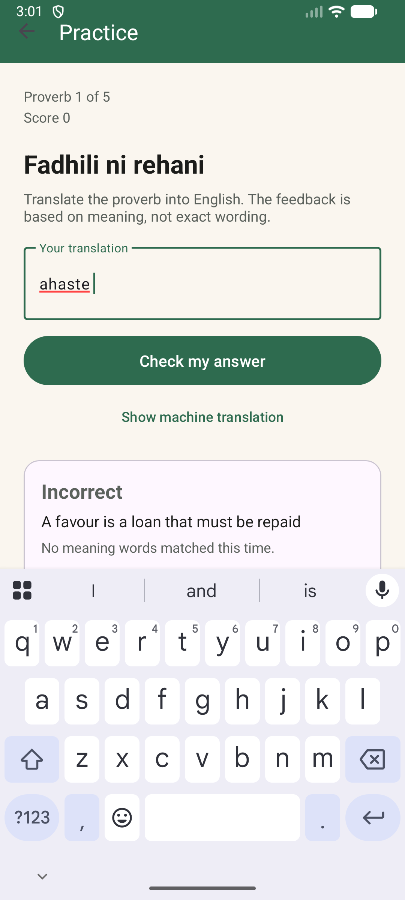
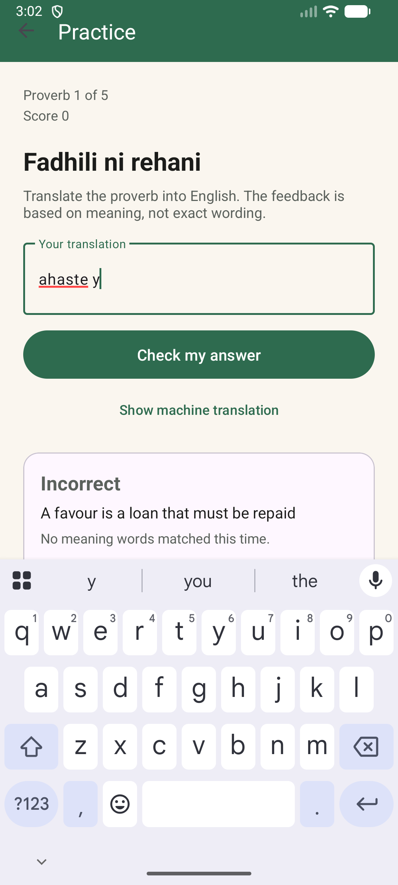
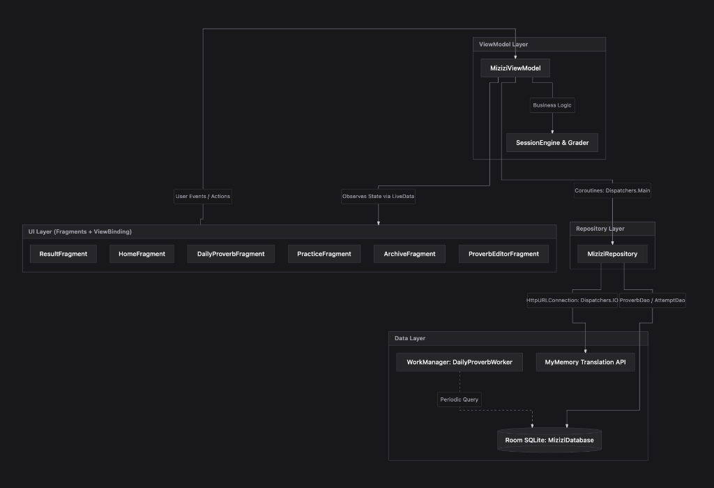
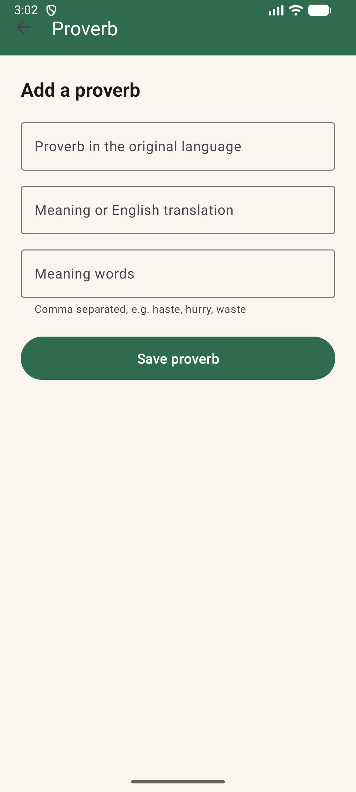
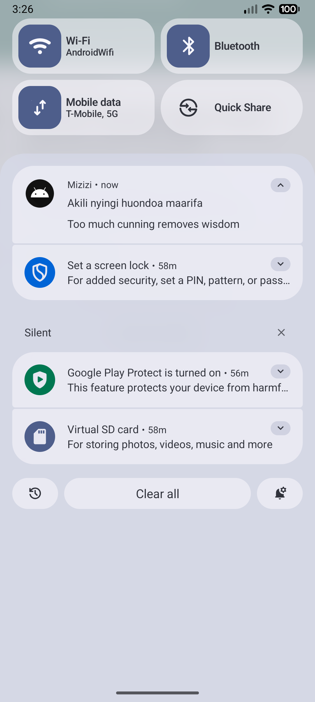

Keeping Kenyan languages usable for the next generation through meaning-based active practice.
Young urban Kenyans understand their mother tongue conversationally, but lack confidence to write, translate, or speak it.
Young Kenyans understand conversational speech when spoken to by elders, but freeze when asked to construct sentences or translate proverbs actively. Without active practice, confidence never develops.
Generic translation tools (e.g. Google Translate) translate word-for-word. For African proverbs (methali), literal machine translation strips the philosophical lesson, metaphor, and moral context entirely.
Native elders and relatives are not always on hand to review daily practice. Static reference books offer zero feedback on a learner's own attempts, leaving mistakes uncorrected.
Empowering urban youth and young parents while preserving indigenous cultural heritage.
• Urban Youth & Professionals (18–35):
Living in Nairobi, Kisumu, and Mombasa. Communicate predominantly in English and Sheng in school and work,
but want a private, judgment-free space to rebuild mother-tongue fluency.
• Young Urban Parents:
Parents raising children in metropolitan homes who want to teach authentic indigenous idioms and moral
sayings, but need an authoritative reference to verify correct meanings themselves.
• Cultural Heritage Preservation:
Proverbs (methali) carry centuries of legal, philosophical, and ethical wisdom. If young generations lose
the ability to understand them, centuries of cultural identity erode.
• Active Recall vs. Passive Reading:
Educational cognitive research shows that active practice (attempting to translate and getting feedback)
creates 50%+ stronger memory retention than simply reading passive word lists.
Active translation practice, semantic keyword grading, and automated daily habit formation.


Complete user journeys designed for daily practice, review, authoring, and reminders.
Clean separation of concerns: UI Layer, ViewModel Layer, Repository, and Data Layer.

Each component has exactly one well-defined responsibility under modern Android guidelines.
Tracing an attempt: from touch event, through pure domain logic, into SQLite persistence.
User Submits Answer
• Types answer in PracticeFragment
• Taps Submit button
• Fragment calls:
viewModel.submitAnswer()
• Zero database code in UI
Pure Kotlin Grader
• Passes text to Grader.kt
• Cleans casing & punctuation
• Matches concept keywords
• Dynamic pass mark check
• Updates _outcome LiveData
Async Room Write
• Launches on viewModelScope
• repository.recordAttempt()
• AttemptDao executes SQL on background thread:
INSERT INTO attempts...
LiveData Auto-Update
• Room detects table update
• observeAll() re-emits list
• Home & Archive refresh automatically
• No manual polling required
Run live on physical device / emulator to demonstrate working functionality rather than static screenshots.


Direct, simple technical answers backed by actual code implementation.
• MVVM + Repository: Ensures strict separation of concerns.
• Lifecycle Resilience: MiziziViewModel is scoped to
activityViewModels(), preserving active practice sessions and scores across screen
rotations.
• Fast Unit Testing: Grader.kt is pure Kotlin, allowing 9 tests to run in
milliseconds without mocking Android dependencies.
• Room SQLite Safety: Verifies SQL queries at build time, preventing runtime SQL syntax
crashes.
• Reactive LiveData: DAOs return LiveData streams that automatically update the UI when
tables change.
• Safe First-Run Seeding: onCreate() executes seed SQL only once on initial
database file creation.
• Create: ProverbDao.insert() with auto-increment ID and
AttemptDao.insert().
• Read: Reactive observeAll() queries returning LiveData to Home and
Archive.
• Update: ProverbEditorFragment pre-fills entity fields and calls
update().
• Delete: Single deletion in editor; row deletion and bulk clear() in
Archive.
• Centralized Validation: validateProverb() enforces non-blank fields and a
minimum length of 6 characters.
• UI Feedback: Emits FormResult.Invalid(message), showing an inline red
error banner.
• Grader Normalization: Strips punctuation; empty answers safely receive
INCORRECT without crashing.
Resilience patterns, background scheduling, and future engineering roadmap.
1. UI Event: Fragment collects user input and calls ViewModel.
2. Coroutine Dispatch: ViewModel launches on viewModelScope (Main).
3. Repository Delegation: Maps parameters to entity and calls DAO.
4. Room Thread: Writes to SQLite asynchronously on background thread.
5. LiveData Invalidation: Room triggers automatic LiveData update to UI.
• Sealed ApiResult: Encapsulates network responses in Success or Error.
• Strict Timeouts: HttpURLConnection enforces 8-second connect and read
timeouts.
• Offline-First Design: Network failure shows a graceful error card; practice, grading,
and archive remain 100% operational offline.
• Guaranteed Persistence: Survives app process death and device reboots, unlike standard
Handlers or Timers.
• Battery / Doze Mode: Daily notifications are deferrable; OS batches them.
• Idempotent Policy: ExistingPeriodicWorkPolicy.KEEP (24h period) prevents
duplicate registered workers.
1. Multi-Vernacular Support: Add Kikuyu, Dholuo, Luhya, Kalenjin, Kamba with native audio
pronunciation.
2. On-Device NLP: Local TensorFlow Lite embeddings for deeper semantic similarity.
3. Cloud Sync: Firebase Auth & Firestore for community-contributed proverbs.
Every member designed, implemented, and committed a distinct architectural slice.
423bece]: Setup, Room DB, Repository,
ViewModel, Navigation2bed260]: Practice screen question flow, answer
input, inline scoringe6c095a]: Result screen, Safe Args,
keyword matching breakdown80c773c]: Archive RecyclerView, DiffUtil
adapter, item deletionb6ccdc3]: Proverb editor dual-mode form,
validation logicc549827]: Daily proverb, MyMemory HTTP
integration, WorkManager36a31b2]: README, release checklist, signed
APK verification
• Signed production APK verified
• 9/9 Gradle Unit Tests Passing
• Tested on Android API 24+
Thank you. We welcome your questions.